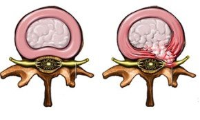

"Fourways Chiropractic For the Whole Family"
Back pain drastically affects our health and is a leading reason why people seek Chiropractic therapy. Your local chiropractor can help provide lower back pain treatment and help you manage the pain in your lower back.
Current evidence suggests that over 70% of adults get lower back pain at some time during their life. However, staying active with good exercise movements and with the experience of a chiropractor, conservative treatment like Chiropractic can help lower back pain causes.
Sometimes patients come in thinking they had kidney pain or a kidney infection because how severe the pain levels can be and the back spasms that go with it.
"I only bent over to tie my shoe!" This is something a chiropractor gets to hear time and time again. By repeating daily activities such as bending, lifting and twisting this may result in bad movement patterns. This poor body awareness times and incorrect lifting habits can lead to an acute severe back pain episode.
The reason for this will be the fatigue process. This mechanical fatigue in the muscles, tendons, ligaments and spinal joints can lead to pelvis pain and hip pain. This is why your chiropractor will want to understand how you tackle these everyday movements in life. The chiropractor will also ask about any major physical traumas to yourself such as:
A major pain episode in your life can cause you to compensate your movements to initially avoid pain. Repeating these pain compensation movements when the injury is healed can place excess pressure on structures. Degeneration of the spine and disc typically happens due to incorrect pressure on the lower back structures for years.
Inter-vertebral discs in your back cannot actually "slip out" of place. It is better to classify them as a disc bulge or herniated disc. A chiropractor would help assess if you have a true lower back disc problem, like a L4-5 or L5-S1 disc herniation, causing the lower back pain.
Spinal discs are made of outer fibrous rings (annulus fibrosus) attached to the vertebrae, with a softer gel sac inner core (nucleus pulposus). The annulus can tear from trauma or degeneration causing pain. Later on this can allow the inner gel sac (nucleus pulposus) to try push out. Direct mechanical pressure from the disc or inflammatory chemical irritation on the spinal nerve(s) can occur. This is known as a pinched nerve or trapped nerve in your spine and is medically referred to as a radiculopathy.
Pinched nerve(s) from your lumbar spine can cause pain in your back, and/or 'referred' nerve symptoms (pain, pins and needles, numbness, weakness) over an area that the nerve(s) supplies. In the case of the lower back nerves causes sciatica, which is pain in the leg.
People can be confused when health care professionals explains a back disc problem, or why the nerve is pinched and what the x-rays or MRI scan means. That is why a chiropractor, when you come in saying you think you 'pinched a nerve” or 'slipped a disc’, will ask detailed questions first and then perform orthopaedic and neurological tests to assess your spinal nerves, joints and muscles.
A chiropractor may refer you to get an image of your spine using x-rays. X-rays will assess your bone and joint quality only, and does not show the disc and nerves. An magnetic resonance imaging scan of the lumbar spine is needed to see the quality of your spinal discs and nerves. If there is a spinal disc problem your chiropractor will tell you and depending on their findings recommend either conservative care or if nerves are severely compressed refer you to a neurosurgeon or an orthopaedic surgeon for a spinal surgery assessment.
You can help prevent lower back pain or sciatica pain episodes by avoiding common spine stress situations. Some basic examples are:
Some tips you can do for self-treatment of lower back pain to help yourself are:
As mentioned earlier, a poor back posture may eventually lead to a back pain episode. Your chiropractor may advise you to make postural changes if you:
For lower back pain relief you definitely can visit your local chiropractor. The chiropractor can help you lower the stress to your spinal joints (facet joints), nerves and muscles. The aim is to reduce your risk factors for back pain from occurring.
Chiropractic adjustments (spinal manipulative therapy) can help restricted spinal joints move better. Your chiropractor won't only use spinal manipulation. They will also remind you to promote your health through lower back exercises, stretches and maybe nutrition awareness. Maintaining a healthy weight can also help you recover from a back injury. Your diet may also have an effect on the inflammation in your body. A good example would be diet causing a gout episode.
Before having a laminectomy or discectomy for your backache it is recommended that normally about six weeks of conservative care be done first. This is to see if the body will heal itself without the need for spinal surgery. However, there are times when spinal surgery is a medical emergency. Thankfully these are rare events, like cauda equina.
For more information from wikipedia you can click here.